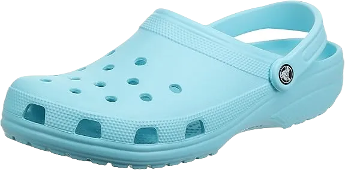
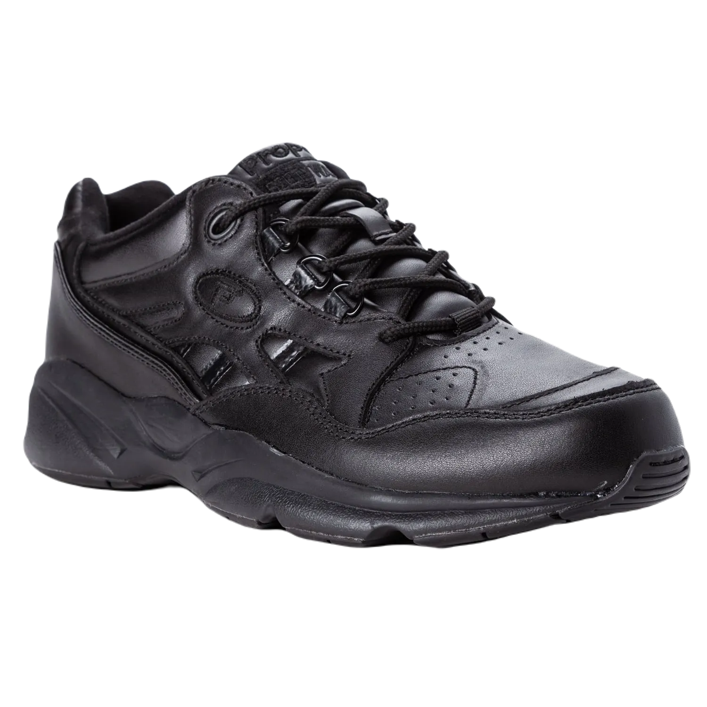
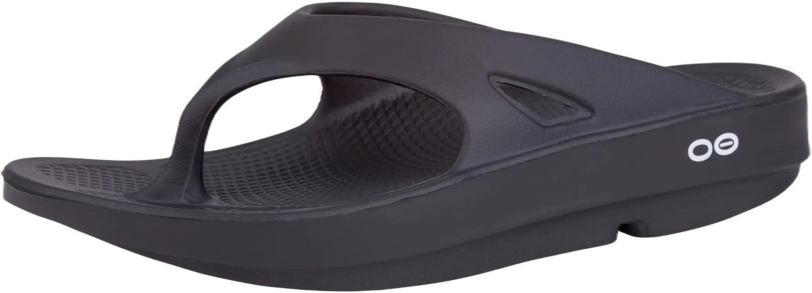
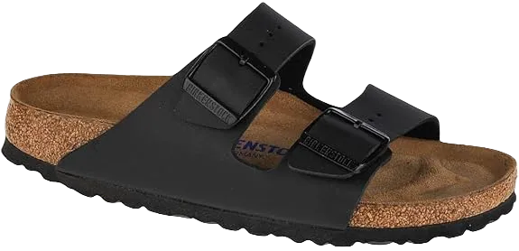
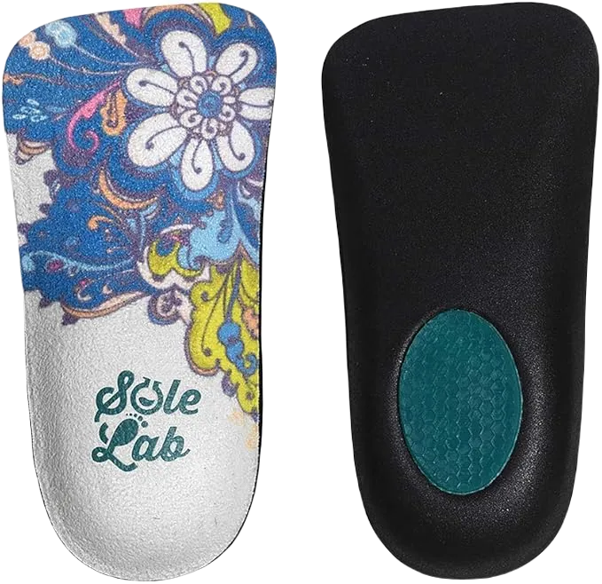
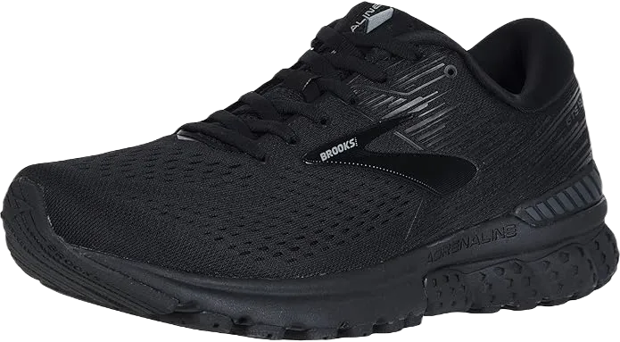

8 Best Shoes for Gout & Foot Pain Reviews 2024
Gout is a painful condition classified as inflammatory arthritis, caused by the build-up of uric acid crystals in the joints. It commonly leads to swelling and redness, often affecting the entire foot. The intense discomfort can be debilitating, making it difficult to move or walk without pain.
Experts like Keith Rome, PhD, from Auckland University of Technology (AUT), emphasize the importance of wearing comfortable footwear for people suffering from gout. Properly fitted, supportive shoes can significantly help reduce the pain, impairment, and disability associated with the condition, offering relief and improving mobility.
-
#1
Crocs Classic Clog
This shoe is one of the most well-known options for individuals dealing with gout. Designed by Crocs, a brand renowned for its commitment to comfort, it is an ideal choice for people with swollen feet, offering ample space to accommodate swelling without causing discomfort.
The clogs are incredibly lightweight and feature numerous holes, making them highly breathable. With their extra room and easy-to-clean design, they can be rinsed off quickly under a tap, providing both convenience and comfort.
The sole is crafted from Crocs' ultra-light Croslite patented foam, which helps swollen feet move with ease while minimizing the strain on joints. Though perfect for summer, these classic clogs can also be worn in the winter with socks, making them an excellent year-round value. -
#2
Asics Gel Venture 6- Athletic
.webp)
Next on the list is another highly comfortable shoe that provides maximum relief for those with gout, making it an excellent all-around option.
The upper part of the shoe is made from a blend of soft synthetic leather and breathable mesh, allowing for airflow even during extended wear. Its flat design ensures that your feet stay cool and comfortable throughout the day, no matter how long you have them on.
Designed with a wider toe box, this shoe offers extra comfort while walking or running. It also features forefoot and rearfoot gel cushioning to absorb shocks and reduce pressure on the feet. The AHAR high-abrasion-resistant outsole, along with rubber reinforcements, provides excellent grip on various terrains, ensuring people with gout can move confidently and comfortably. -
#3
Propet Men’s stability Walker
Propet is a brand known for satisfying its customers by offering footwear designed for maximum comfort. This particular pair is crafted with individuals suffering from gout in mind, allowing them to walk or even run with ease, free from discomfort. The design focuses on both style and comfort, making it an ideal choice for those seeking supportive shoes.
Made from a combination of breathable mesh and leather, these shoes are incredibly lightweight. This not only enhances their durability but also ensures that feet stay cool, even when worn for extended periods. They are suitable for heavier individuals, providing a reliable option for exercise and walking without strain.
The shoe features removable insoles, allowing for personalized comfort adjustments. Additionally, the wider heel offers improved stability and grip, while the slip-resistant sole ensures safe movement on various terrains, making this footwear a dependable choice for those with gout. -
#4
OOFOS Original Thong
These thongs are among the most comfortable options available for individuals dealing with gout. OOfos, a company known for its exceptional footwear, has designed these to offer maximum relief for swollen feet. With superior shock absorption and ample cushioning, they provide significant comfort, making each step less painful for those with gout.
Crafted from soft rubber, these thongs are incredibly lightweight, enhancing their ease of wear. The sole material absorbs 37% of external shocks, helping to shield both feet and joints from impact, making them ideal for long periods of use and reducing strain caused by walking.
Though slightly on the higher end in terms of price, these flip-flops come highly recommended by podiatrists. Their combination of comfort, durability, and support makes them a valuable investment for anyone seeking relief from gout-related discomfort. -
#5
Birkenstock Arizona
Next on the list is a comfortable pair of slippers specifically designed for individuals with gout. These slippers are an ideal choice for swollen feet, featuring two buckled straps that are gentle against the skin, ensuring minimal irritation. Made from soft leather, they offer a protective layer for sensitive, swollen feet.
The footbed is crafted from cork, one of the best materials available, known for its ability to mold to the shape of each individual’s foot. This provides targeted support to pressure zones, offering relief to areas in pain and enhancing overall comfort during wear.
With a slip-resistant sole, these slippers provide a stable and secure step, allowing the wearer to move with ease on various surfaces, including dust and water. Though priced higher than many other sandals, the unparalleled comfort and support they offer make them worth the investment for those seeking relief from gout-related foot pain. -
#6
Orthopedic Dress Shoes
If you're in search of a stylish dress shoe that accommodates swollen feet due to gout, Propet has you covered. Known for prioritizing comfort, Propet offers footwear designed to ease painful feet. For men, they present the Propet Commuterlite, while women can enjoy the Propet Twilite Walker, both crafted with the same attention to comfort and support.
These shoes are made from full-grain leather and mesh, providing breathability that allows for extended wear without discomfort. The airflow through the material helps keep swollen feet cool and comfortable throughout the day, making them ideal for all-day use.
The shoes also feature removable insoles, allowing for a custom fit, especially for heavier individuals. The slip-resistant soles ensure stability on various terrains, and the design includes an energy plate to promote efficient motion, helping conserve energy with each step. These features make the shoes a practical and supportive choice for those with gout. -
#7
Brooks addiction 13
.webp)
This athletic shoe is an excellent option for individuals dealing with swollen feet and joint pain. Designed for daily wear, it’s versatile enough for light running, walking, and even as a work shoe. Made from breathable mesh, it allows for airflow, keeping feet comfortable even during extended use. Additionally, the moisture-wicking lining helps maintain an optimal temperature, ensuring a pleasant wearing experience.
Equipped with a BioMoGo DNA midsole, this shoe provides exceptional cushioning, effectively protecting the feet from external shocks. Its innovative design includes a progressive diagonal Rollbar, which helps distribute pressure evenly for those experiencing discomfort. With a low to medium arch support, it caters to the natural contours of the foot, enhancing overall comfort.
Available at a reasonable price point, this shoe combines practicality and comfort, making it a valuable addition to the footwear collection of anyone seeking relief from swollen feet and joint pain. -
#8
Brooks Adrenaline GTS 19
This comfortable shoe from Brooks is designed with both walking and running in mind, particularly for those with swollen feet. The Adrenaline GTS 19 is available for both men and women and has become a favorite in the market. Its upper is constructed from synthetic mesh and soft rubber, providing breathability that makes it suitable for long hours of wear, even in warmer weather.
The shoe features a removable insole, adding to its versatility and comfort. Designed for a smooth heel-to-toe transition, it includes a rollbar to help control pronation, ensuring stability during movement. For individuals with swollen feet, this shoe offers the necessary support to navigate various terrains with confidence.
Equipped with a slip-resistant rubber sole, the Adrenaline GTS 19 allows wearers to maintain a firm grip on different surfaces, making it a reliable choice for those seeking comfort and security while on the go.